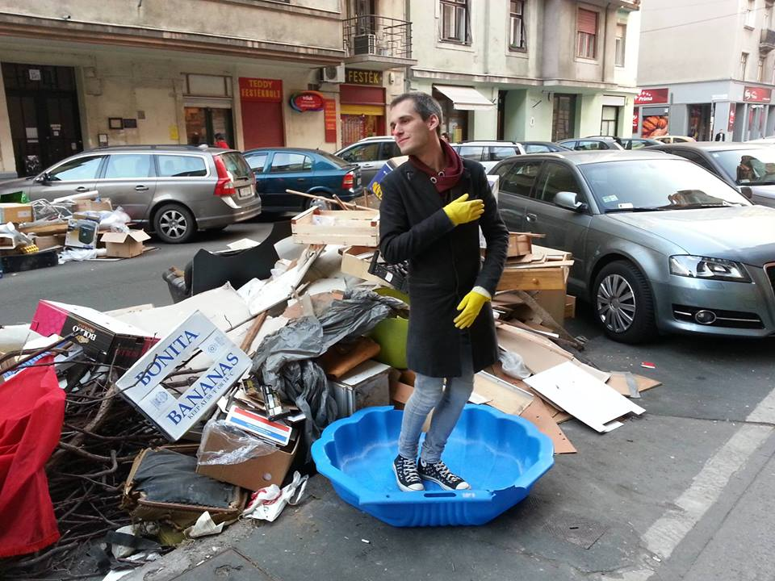

Incident ::: Tycho 3Helium Refinery
Tycho Station is humanity's most important source of Helion (3He), an isotope vital to the powerhungry society of Earth and Mars. After the massive lunar complex going silent and the subsequent nervous two-day wait, all the evacuees reached LEO Gateway but one. A rescue mission was dispatched to find the last survivor and to discover the circumstances of what is now widely known as 'Tycho Incident'.

Extramission
The disk world of Extramission revolves around the viewer. A laser pointer's point of incidence represents the single point of view allowed in the room, projecting tall shadows of the constantly tumbling-turning building-like structures. As the
point of view is stripped away from the individual, a cinematic experience is produced, sharing the same point of view between multiple onlookers, while allowing the impossible of being able to see the origin of said point of view.
I forgot how to Budapest
I forgot how to Budapest is an experimental YouTube channel about common situations one can find themselves in Budapest. It's a playable simulator based on the strange phenomenon that the greater the number of people are involved and the more tedious
or automatized the task is (ie. commuting), the more people appear to be objects to avoid, rather than the collection of beautiful individuals they truly are. In this game you really don't want to play, environments turn hostile, systems originally
designed with the best of intentions turn against their users, people become obstacles, and a good day turns out to be the absolute worst.
Ledpuppets Company
GE Personal Window
... A SAJÁT ÁGYUNKBAN?
Aglaja analóg főcím
Bio

László András Halák is a Budapest-based multimedia artist, practitioner of semiconductor magic and burner of fingers (strictly his own).